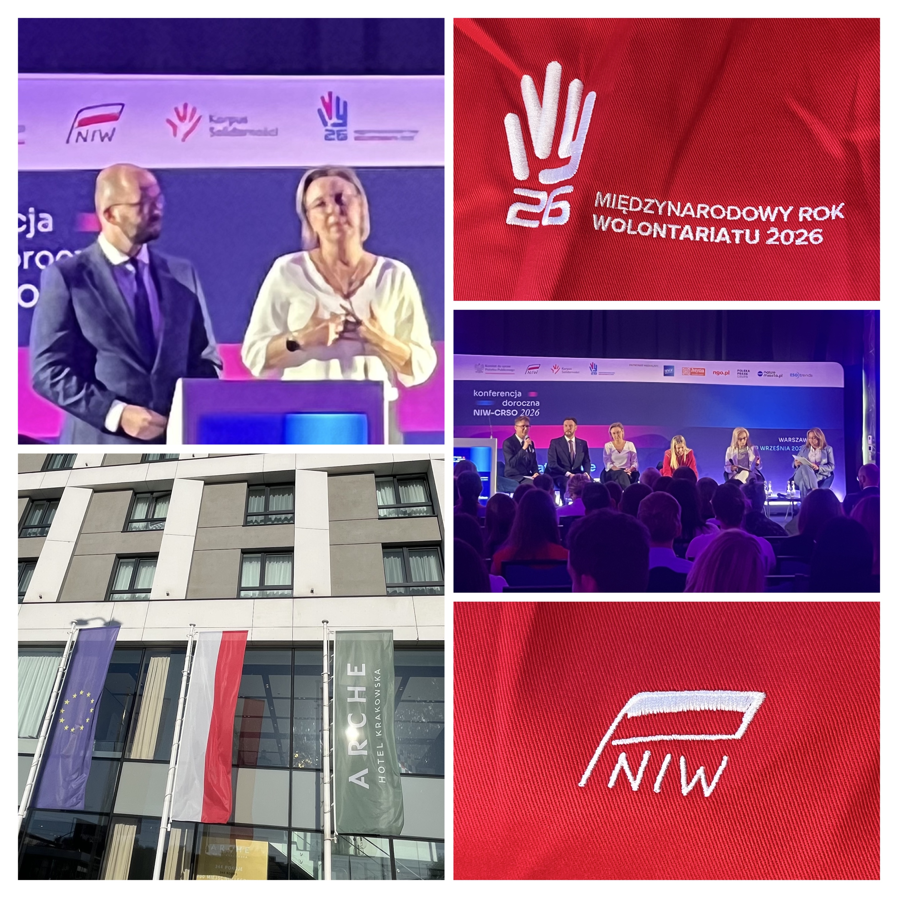

Koniec lata to dla Fundacji „Ostatnia Warta” czas przejścia z intensywnych działań w terenie do aktywności o charakterze strategicznym. Po zrealizowaniu z sukcesem trzech projektów wakacyjnych w ramach inicjatywy „Mobilna Warta”, delegacja fundacji wzięła udział w dorocznej konferencji Narodowego Instytutu Wolności – Centrum Rozwoju Społeczeństwa Obywatelskiego (NIW-CRSO) w Warszawie.
Wydarzenie, które miało miejsce w dniach 8-9 września w warszawskim hotelu Arche, odbyło się pod hasłem „Wolontariat buduje aktywne społeczeństwo”. Bogaty program konferencji obfitował w debaty i panele dyskusyjne poświęcone przyszłości społeczeństwa obywatelskiego, budowaniu międzysektorowych partnerstw oraz angażowaniu kolejnych pokoleń w działania społeczne. To dla nas doskonała okazja do wymiany doświadczeń z przedstawicielami trzeciego sektora z całej Polski.
Absolutnym punktem kulminacyjnym otwarcia konferencji było wystąpienie dyrektora NIW-CRSO, Michała Brauna. Podczas swojej prelekcji trafił w sedno, definiując to, co w sektorze NGO powinno być żelazną regułą: mądre pomaganie to odpowiedź na obiektywne potrzeby drugiego człowieka, a nie realizacja własnych wyobrażeń o tym, czego inni rzekomo potrzebują.
Ta kluczowa zasada, eliminująca egocentryzm z pomagania, w stu procentach rezonuje z misją Fundacji „Ostatnia Warta”. Nasza codzienna praca opiera się właśnie na tym fundamencie – niesiemy realną pomoc i użyteczność tam, gdzie są one obiektywnie niezbędne.
Dwa dni wypełnione merytorycznymi dyskusjami dały nam potężny zastrzyk nowej wiedzy i inspiracji. Zakończyliśmy ten wyjazd roboczy z pełnymi głowami pomysłów, chłonąc najlepsze praktyki. Teraz, z nową energią, wracamy do Gdańska, by przekuć usłyszane słowa w konkretne czyny. Działamy dalej!